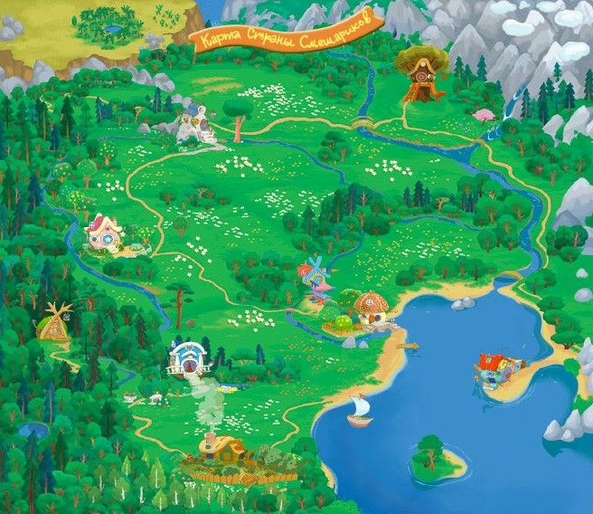

Действие происходит в уютном и безопасном мире, где персонажи живут в гармонии, дружат, исследуют окружающую среду и учатся новому. Место действия — Ромашковая долина, окружённая лесами, горами и морем. Здесь всегда лето, а зима бывает только в специальных сериях.
Каждый смешарик имеет собственный дом, отражающий его характер:
- Дом Кроша и Ёжика — уютная норка с двумя входами, внутри много книг и кактусов.
- Дом Нюши — розовое строение, напоминающее будуар принцессы, с большим зеркалом.
- Дом Пина — техническая мастерская, заваленная чертежами и деталями.
- Дом Лосяша — обсерватория с телескопом на крыше.
- Дом Копатыча — деревенская изба с огородом и пасекой.
- Дом Совуньи — дупло в старом дубе, внутри аптечный шкаф и уютное кресло.
- Дом Кар-Карыча — башня с роялем и коллекцией сувениров из путешествий.
Каждая серия представляет небольшую жизненную ситуацию с моралью или философским подтекстом. В образовательном спин-оффе «Пин-код» герои путешествуют по разным уголкам планеты и даже выходят в открытый космос, знакомясь с законами физики, биологии и истории.
Особенности мира:
- Яркая визуальная стилистика — все персонажи и предметы круглые, без острых углов.
- Безопасная среда — конфликты всегда решаются мирно, никто не погибает и не страдает.
- Образовательные сюжеты — многие серии построены вокруг научных или житейских открытий.
